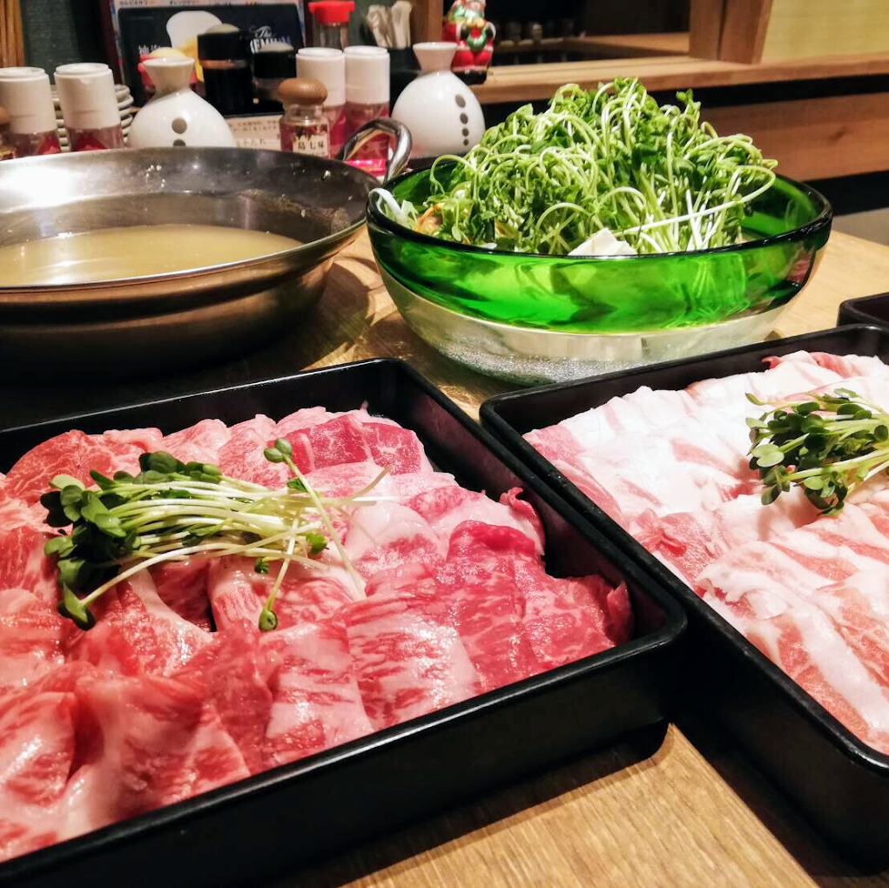
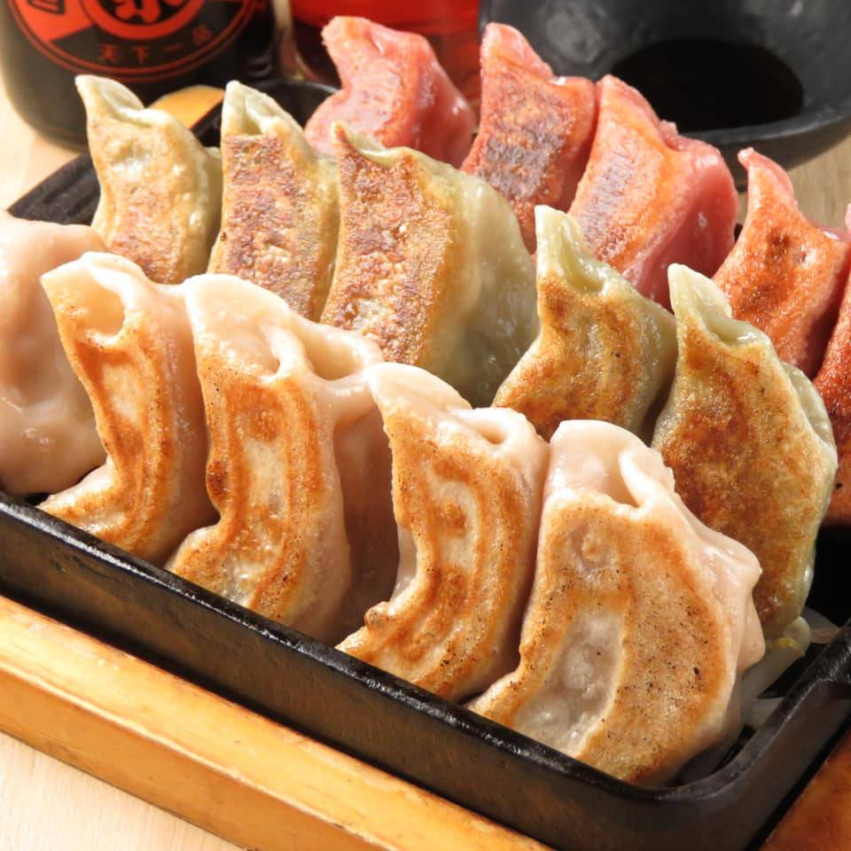
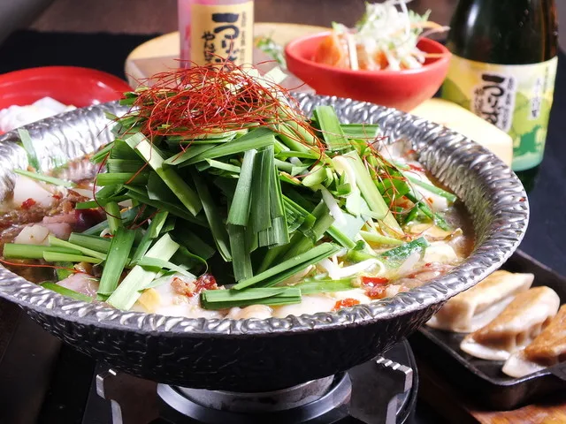

「うりずん」
名古屋市北区山田
※JR・瀬戸線・名城線-大曽根駅から徒歩4分



Googleマップの評価「星４.１」
アグー豚の餃子屋やしゃぶしゃぶが食べられる沖縄料理の居酒屋
沖縄料理がテーマの居酒屋で、しゃぶしゃぶや餃子などアグー豚を使った料理が多数ある。ここで食べた料理で印象的だったのはもずく素麺で、本州でよく食べられるもずくを酢漬けにしたものではなく臭みの無い生のもずくを麵つゆでいただくのだ。さっぱりとしていていくらでも食べられるので、うりずんへ足を運んだ際には是非とも食べてもらいたい。
ちなみに、うりずんが入っている建物のビルには「かいえん」やその他の居酒屋などが入っている。飲み足りない場合はビルの制覇を目指しても良いだろう。
「店舗所在地」
| 住所 | 〒462-0810 愛知県名古屋市北区山田１丁目４−５２ ジェイ グロース 大曽根 ビル 4F |
|---|---|
| TEL | 052-914-0017 |
| URL | instagram.com |